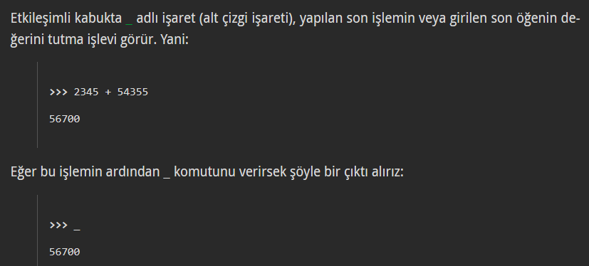
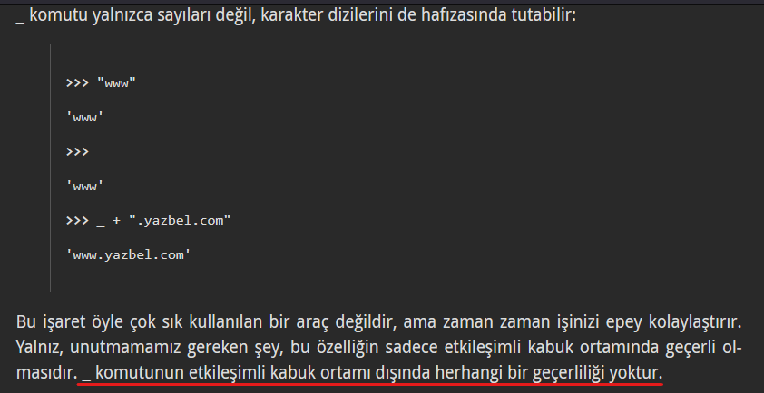

interactive shell
interactive shell
interactive shell(etkileşimli kabuk) komut satırı, terminal gibi yerlerde python kullanırken “>>>” şekliyle açılan python etkileşim alanıdır. Yazdığımız kodların sonucunu print etmemize gerek kalmadan anında görmemiz gibi özellikleri vardır.
interactive shell memory
“_” işareti

